KNN算法
原理
说人话
如下图，圆圈代表我需要预测的位置（在某某小区），但不知道圆圈具体在哪。除此外，还知道其他几人（其他样本）所在位置。于是我就找离我很近的那个人，他所在的位置就很有可能是我所在的位置。
比如在这个图中，圆圈离那个蓝色衣服的人最近，假设我们只根据一个人来判断，那么我们就认为圆圈和蓝衣服在一个小区。
相同的，我们也可以根据多个人的位置来判断自身位置，比如两个人。假设蓝衣服和蘑菇头在一个小区里，那么圆圈离他们两最近，圆圈便和他们在一个小区。
很明显，如果这样分类我们很有可能会遇见一个问题，假设蘑菇头和蓝衣服不在同一个小区该怎么办？
此时应该使用权值进行计算，假设和蓝衣服的距离是1.12，而和蘑菇头的距离为1.5。那么他们的权重分别为1/1.12=0.89和1/1.5=0.67。于是我们能够得出，蓝衣服的权重更大，因此我们认定圆圈和蓝衣服在同个小区。
假设我们根据3个人来判断，而最近的三个人又分在两个小区里，那么我们就将所有人的权重根据小区来相加，最后得出对应小区的权重。然后根据小区的权重来进行选择。这也是不直接使用距离来进行计算的原因。
而在上述过程中，小区就代表了分类，选择几个人就代表了k值，根据什么来进行距离的计算也是一个可选的项。
对于距离的计算，有许多种计算的方式，比如：闵可夫斯基距离、欧氏距离、曼哈顿距离、切比雪夫距离、余弦距离
具体计算
欧氏距离
对于两个n维向量x和y，它们之间的欧氏距离为
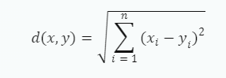
哈顿距离
对于两个n维向量x和y，它们之间的曼哈顿距离为
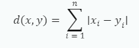
切比雪夫距离
对于两个n维向量x和y，它们之间的切比雪夫距离为
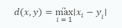
闵可夫斯基距离
对于两个n维向量x和y，它们之间的闵可夫斯基距离为
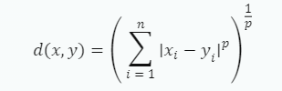
其中p为一个可变参数。当p=1时，闵可夫斯基距离即为曼哈顿距离；当p=2时，闵可夫斯基距离即为欧氏距离。
余弦距离
对于两个n维向量x和y，它们之间的余弦距离为
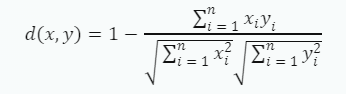
使用
1 | from sklearn.neighbors import KNeighborsClassifier |
KNeighborsClassifier可用参数：
n_neighbors：指定最近邻的数量，即KNN算法中的k值。默认值为5。weights：指定权重函数。可选值有'uniform'、'distance'和自定义函数。如果选择'uniform'，则所有邻居的权重都相等；如果选择'distance'，则权重与距离成反比；如果选择自定义函数，则可以根据距离计算权重。默认值为'uniform'。algorithm：指定用于计算最近邻的算法。可选值有'auto'、'ball_tree'、'kd_tree'和'brute'。如果选择'auto'，则会根据数据自动选择最合适的算法；如果选择'ball_tree'，则使用BallTree算法；如果选择'kd_tree'，则使用KDTree算法；如果选择'brute'，则使用暴力搜索算法。默认值为'auto'。leaf_size：指定BallTree或KDTree的叶子节点大小。这个参数会影响树的构建和查询速度，以及存储树所需的内存大小。默认值为30。p：指定闵可夫斯基距离公式中的指数p。当p=1时，使用曼哈顿距离；当p=2时，使用欧氏距离。默认值为2。metric：指定距离度量方法。可以使用任何有效的距离度量方法，默认值为’minkowski’与p参数结合使用。metric_params: 传递给距离度量函数的其他关键字参数。
补充
knn算法的核心在于如何高速的找到与预测点临近的样本，在这一方面，knn算法使用了特殊的方法来储存各个各个样本间的距离。这种储存方法称为kd树。根据选择，还可以选择Ball树作为储存方案。
在数据样本数量较低时，可以直接使用暴力搜索来选择节点。但随着数据量和维度的增加，传统的暴力搜索方法速度过慢，效率过低。因此采用该储存方式来加快数据检索的速度。
kd树详解
以下资料转载自：k-d tree算法 - J_Outsider - 博客园 (cnblogs.com)
k-d 树（k-dimensional 树的简称），是一种分割 k 维数据空间的数据结构。主要应用于多维空间关键数据的搜索（如：范围搜索和最近邻搜索）。
生成树
以一个简单直观的实例来介绍 k-d 树算法。假设有 6 个二维数据点 {（2,3），（5,4），（9,6），（4,7），（8,1），（7,2）}，数据点位于二维空间内（如图 1 中黑点所示）。k-d 树算法就是要确定图 1 中这些分割空间的分割线（多维空间即为分割平面，一般为超平面）。下面就要通过一步步展示 k-d 树是如何确定这些分割线的。
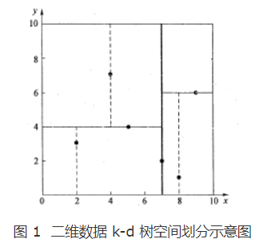
k-d 树算法可以分为两大部分，一部分是有关 k-d 树本身这种数据结构建立的算法，另一部分是在建立的 k-d 树上如何进行最邻近查找的算法。
由于此例简单，数据维度只有 2 维，所以可以简单地给 x，y 两个方向轴编号为 0,1，也即 split={0,1}。
（1）确定 split 域的首先该取的值。分别计算 x，y 方向上数据的方差得知 x 方向上的方差最大，所以 split 域值首先取 0，也就是 x 轴方向；
（2）确定 Node-data 的域值。根据 x 轴方向的值 2,5,9,4,8,7 排序选出中值为 7，所以 Node-data = （7,2）。这样，该节点的分割超平面就是通过（7,2）并垂直于 split = 0（x 轴）的直线 x = 7；
（3）确定左子空间和右子空间。分割超平面 x = 7 将整个空间分为两部分，如图 2 所示。x < = 7 的部分为左子空间，包含 3 个节点 {（2,3），（5,4），（4,7）}；另一部分为右子空间，包含 2 个节点 {（9,6），（8,1）}。
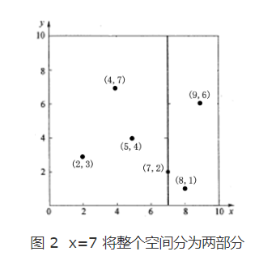
如算法所述，k-d 树的构建是一个递归的过程。然后对左子空间和右子空间内的数据重复根节点的过程就可以得到下一级子节点（5,4）和（9,6）（也就是左右子空间的 ‘根’ 节点），同时将空间和数据集进一步细分。如此反复直到空间中只包含一个数据点，如图 1 所示。最后生成的 k-d 树如图 3 所示。
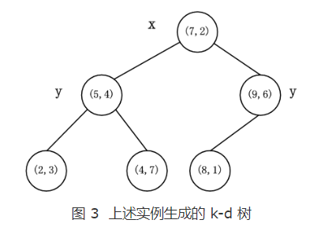
注意：每一级节点旁边的 ‘x’ 和 ‘y’ 表示以该节点分割左右子空间时 split 所取的值。
查找
在 k-d 树中进行数据的查找也是特征匹配的重要环节，其目的是检索在 k-d 树中与查询点距离最近的数据点。这里先以一个简单的实例来描述最邻近查找的基本思路。
星号表示要查询的点（2.1,3.1）。通过二叉搜索，顺着搜索路径很快就能找到最邻近的近似点，也就是叶子节点（2,3）。而找到的叶子节点并不一定就是最邻近的，最邻近肯定距离查询点更近，应该位于以查询点为圆心且通过叶子节点的圆域内。为了找到真正的最近邻，还需要进行 ‘回溯’ 操作：算法沿搜索路径反向查找是否有距离查询点更近的数据点。此例中先从（7,2）点开始进行二叉查找，然后到达（5,4），最后到达（2,3），此时搜索路径中的节点为 <（7,2），（5,4），（2,3）>，首先以（2,3）作为当前最近邻点，计算其到查询点（2.1,3.1）的距离为 0.1414，然后回溯到其父节点（5,4），并判断在该父节点的其他子节点空间中是否有距离查询点更近的数据点。以（2.1,3.1）为圆心，以 0.1414 为半径画圆，如图 4 所示。发现该圆并不和超平面 y = 4 交割，因此不用进入（5,4）节点右子空间中去搜索。
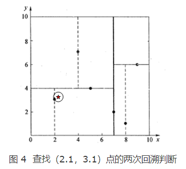
再回溯到（7,2），以（2.1,3.1）为圆心，以 0.1414 为半径的圆更不会与 x = 7 超平面交割，因此不用进入（7,2）右子空间进行查找。至此，搜索路径中的节点已经全部回溯完，结束整个搜索，返回最近邻点（2,3），最近距离为 0.1414。
一个复杂点了例子如查找点为（2，4.5）。同样先进行二叉查找，先从（7,2）查找到（5,4）节点，在进行查找时是由 y = 4 为分割超平面的，由于查找点为 y 值为 4.5，因此进入右子空间查找到（4,7），形成搜索路径 <（7,2），（5,4），（4,7）>，取（4,7）为当前最近邻点，计算其与目标查找点的距离为 3.202。然后回溯到（5,4），计算其与查找点之间的距离为 3.041。以（2，4.5）为圆心，以 3.041 为半径作圆，如图 5 所示。可见该圆和 y = 4 超平面交割，所以需要进入（5,4）左子空间进行查找。此时需将（2,3）节点加入搜索路径中得 <（7,2），（2,3）>。回溯至（2,3）叶子节点，（2,3）距离（2,4.5）比（5,4）要近，所以最近邻点更新为（2，3），最近距离更新为 1.5。回溯至（7,2），以（2,4.5）为圆心 1.5 为半径作圆，并不和 x = 7 分割超平面交割，如图 6 所示。至此，搜索路径回溯完。返回最近邻点（2,3），最近距离 1.5。
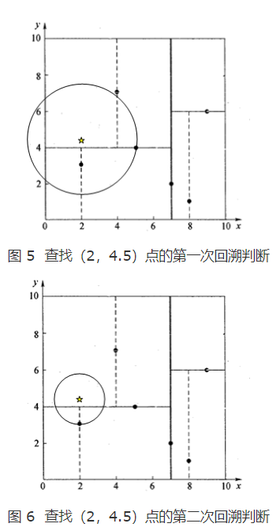
决策树
原理
说人话
决策树就是一系列的判断语句。举个例子：
现在我有了一堆好学生和坏学生的数据，如果根据决策树来进行学习，那么就会得到以下的树：
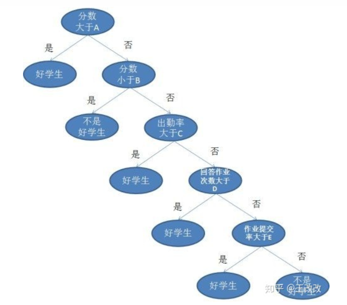
可以看到，决策树就是一系列的判断句。而决策树算法就是生成这一系列判断句的算法。
想要生成一个好的树，需要引入信息熵的概念。信息熵就是对不确定性的消除。
举个例子：现在有小明和小红两人，我想要知道小明的年龄，这时，小明说：“我17岁了。”很明显，因为这句话，我们知道了小明的年龄，小明的年龄对我们来说不再是不确定的。那么我们就认为这句话的信息熵很大。
但接着，小红又说：“小明喜欢吃糖果。”明显，这句话没有消除任何对于年龄的不确定性。所以我们认为小红的这句话信息熵很低。
在理解了信息熵以后，我们就能理解如何生成一颗优秀的决策树了。只要我们找出各个语句的信息熵，然后根据信息熵来排序，这样我们就能得到一颗好的决策树。
具体计算
构建决策树的过程可以概括为以下四个步骤：
- 特征选择：从所有特征中选择一个最优特征进行划分。常见的特征选择标准有信息增益（Information Gain）、信息增益比（Gain Ratio）、基尼指数（Gini Index）等。
- 决策树生成：根据选择的特征，将数据集划分为若干个子集。为每个子集生成对应的子节点，并将这些子节点作为当前节点的分支。对每个子节点，重复第 1 步和第 2 步，直到满足停止条件。
- 停止条件：当满足以下任一条件时，停止决策树的生成：
所有特征已经被用于划分；
所有子集中的样本都属于同一类别；
子集中样本数量不足以继续划分。
常见的决策树算法有ID3、C4.5和CART。
补充
决策树是一种常用的机器学习算法，它具有以下优点：
- 易于理解和解释。决策树可以可视化，便于理解模型的预测过程。
- 需要很少的数据准备。决策树不需要对数据进行归一化或标准化。
- 能够处理多种数据类型。决策树既可以处理数值型数据，也可以处理类别型数据。
- 能够处理多输出问题。决策树可以用于多分类问题和多目标回归问题。
但是，决策树也有一些缺点：
- 容易过拟合。如果决策树过于复杂，可能会过拟合训练数据，导致泛化能力差。
- 不稳定性。决策树对数据中的微小变化非常敏感，可能会导致生成的决策树完全不同。
- 局部最优。决策树算法采用贪心策略，在每个节点上选择最优特征进行分裂，但这并不一定能够生成全局最优的决策树。
朴素贝叶斯
原理
说人话
朴素：假设各个条件之间相互独立
贝叶斯：贝叶斯公式
朴素贝叶斯生成模型是一个概率模型。换句话说，朴素贝叶斯的目的是为了通过基础条件得到为各个类别的概率，然后选一个概率最大的，就是预测值。
举个例子，现在有一堆硬币，有的上面黏上了重物，有的。然后统计这堆硬币抛出的结果（正反面），然后根据这些结果来预测下个硬币的结果。
在计算过后，发现，黏有重物的硬币正面向上的概率为0.9，而没有重物的概率则为0.4。现在有一个黏上了重物的硬币，根据概率，正面向上的概率较大，因此我们认为该硬币抛下后应该为正面。
而计算各个条件下的概率就是朴素贝叶斯要做的。
具体计算
在分类时，对给定的输入x，通过学习到的模型计算后验概率分布P(Y = ck∣X = x)，将后验概率最大的类作为x的类输出。
$$
P(Y|X) = \frac{P(X|Y) P(Y) } {P(X)}
$$
使用
1 | from sklearn.naive_bayes import MultinomialNB |
MultinomialNB可用参数
alpha：浮点型，可选，默认为1.0。这是拉普拉斯/利兹通平滑参数（如果将 alpha 设为 0 并将 force_alpha 设为 True，则不进行平滑）。fit_prior：布尔型，可选，默认为 True。表示是否学习类的先验概率。如果为 false，则使用均匀先验。class_prior：数组形状 (n_classes,)，可选，默认为 None。类的先验概率。如果指定，则不根据数据调整先验。
补充
优点：
朴素贝叶斯模型有稳定的分类效率。
对小规模的数据表现很好，能处理多分类任务，适合增量式训练，尤其是数据量超出内存时，可以一批批的去增量训练。
对缺失数据不太敏感，算法也比较简单，常用于文本分类。
缺点：
理论上，朴素贝叶斯模型与其他分类方法相比具有最小的误差率。但是实际上并非总是如此，这是因为朴素贝叶斯模型假设属性之间相互独立，这个假设在实际应用中往往是不成立的，在属性个数比较多或者属性之间相关性较大时，分类效果不好。
需要知道先验概率，且先验概率很多时候取决于假设，假设的模型可以有很多种，因此在某些时候会由于假设的先验模型的原因导致预测效果不佳。
分类决策存在一定的错误率。
随机森林
原理
说人话
随机森林是对决策的树一种优化方法。在原来使用决策树来进行模型生成时，容易出现过拟合的问题。而随机森林可以很好的避免这个问题。
而随机森林的具体做法也很简单，首先从原数据集中产生一堆小的数据集。接着，对这一堆小数据集进行决策树法进行生成模型，然后将这些模型以少数服从多数的方法来融合起来，最后就能得到一个有着比较好的的效果的模型。
使用
1 | # 随机森林对新闻进行分类 |
可选参数
n_estimators: 整数，表示算法构建的决策树的数量。criterion: 用于衡量分裂质量的函数。支持的标准有“gini”用于基尼不纯度和“entropy”用于信息增益。max_depth: 树的最大深度。如果为None，则节点扩展直到所有叶子都是纯的或直到所有叶子都包含少于min_samples_split个样本。min_samples_split: 分裂内部节点所需的最小样本数。min_samples_leaf: 叶节点所需的最小样本数。max_features: 寻找最佳分裂时要考虑的特征数量。
补充
优点：
随机森林是最准确的决策模型之一。
在大型数据集上表现良好。
可以用来提取变量重要性。
不需要特征工程（缩放和归一化）。
减少了决策树中的过拟合，并提高了精度。
缺点：
随机森林算法需要大量的参数调整，以获得最佳性能。
训练时间可能较长，尤其是在大型数据集上。
逻辑回归
原理
说人话
要明白逻辑回归，首先需要对线性回归有所了解。对于线性回归，最后会得到一个方程，形式差不多如下：
1 | f(x) = k1x1 + k2x2 + ...... + knxn +b |
而逻辑回归，就是将这个方程放到一个特殊的表达式里，这个表达式名为：Sigmoid 函数。长这样：
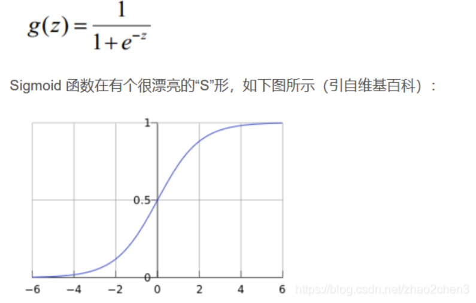
在其中，z就是我们需要将方程代入的地方。
根据这个图像，很容易就能明白。这个Sigmoid 函数值域是0-1。而现在，我们将任意函数放进这个函数里后都能将该函数的值域映射到0-1区间内，再紧接着，设定一个阈值，逻辑回归就完成了。
比如阈值为0.6，那么代入方程后大于0.6的值就为一个类别，而小于或等于0.6就为另一个类别。
使用
1 | from sklearn.linear_model import LogisticRegression |
ps:逻辑回归一般用于二分问题
LogisticRegression可选参数
penalty: 正则化类型。可选值为'l1','l2','elasticnet'或'none'。默认值为'l2'。dual: 是否使用对偶形式。当样本数量大于特征数量时，应设置为False。默认值为False。tol: 停止准则的容差。当优化算法收敛到一定程度时，算法将停止迭代。默认值为1e-4。C: 正则化强度的倒数。必须是正数。较小的值表示更强的正则化。默认值为1.0。fit_intercept: 是否计算截距。如果设置为False，则不会在计算中使用截距。默认值为True。intercept_scaling: 截距缩放因子。仅在使用解算器时有用，例如'liblinear'时有用。默认值为1。class_weight: 类别权重。可选值为'balanced'或字典形式，或者None。如果给定字典，则每个类别都应该有一个相应的权重。如果设置为'balanced'，则类别权重将根据训练数据中每个类别出现的频率自动调整。如果设置为None，则所有类别的权重都将设置为1。默认值为None。random_state: 随机数生成器的种子或随机数生成器实例。用于在正则化时打乱数据以及在多类分类问题中选择最优解算器。默认值为None。solver: 用于优化问题的算法。可选值有'newton-cg','lbfgs','liblinear','sag','saga'等。默认值为'lbfgs'。max_iter: 解算器收敛所需的最大迭代次数。默认值为100。multi_class: 多类分类策略。可选值有'auto','ovr','multinomial'等。如果选择了'ovr'，则会使用一对多策略来解决多类分类问题；如果选择了'multinomial'，则会使用多项式损失来解决多类分类问题；如果选择了'auto'，则会根据数据和其他参数自动选择最佳策略。默认值为'auto'.verbose: 冗长模式开关。对于某些解算器（例如 ‘liblinear’ 和 ‘lbfgs’），可以设置为任意正整数来控制冗长输出的详细程度。默认值为0。warm_start: 热启动开关。如果设置为 True，则在拟合新数据时会重用上一次拟合的结果作为初始条件，默认值是 False。n_jobs: 并行运算时使用的 CPU 核心数量，默认是 None 即 1 个核心。
补充
优点：
- 简单易懂：逻辑回归模型简单易懂，容易解释。它可以给出每个特征对结果的影响程度。
- 训练速度快：逻辑回归模型训练速度快，可以快速地在大数据集上进行训练。
- 鲁棒性强：逻辑回归对噪声数据和异常值不敏感，具有较强的鲁棒性。
- 可以处理多分类问题：逻辑回归不仅可以处理二分类问题，还可以通过一对多策略或多项式损失来处理多分类问题。
缺点：
- 对线性可分数据效果好：逻辑回归假设数据是线性可分的，如果数据不是线性可分的，则模型的效果会变差。
- 容易欠拟合：逻辑回归模型容易欠拟合，因为它只能拟合线性决策边界。
- 对数据预处理要求高：逻辑回归对数据预处理要求较高，需要对数据进行标准化、缺失值填充等预处理操作。